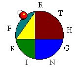

ANS
API
Debugger
Download
Licensing
Links
Locals
OOP In Ficl
Parse Steps
Release History
Upgrading To 4.0
| Official Ficl Pages |
- http://ficl.sourceforge.net
- The official web home of Ficl.
- http://sourceforge.net/project/showfiles.php?group_id=24441
- The Ficl download page.
| Forth Primers And Tutorials |
- http://www.phys.virginia.edu/classes/551.jvn.fall01/primer.htm
- An excellent Forth primer, by Julian Nobel.
- http://ficl.sourceforge.net/pdf/Forth_Primer.pdf
- Another excellent Forth primer, by Hans Bezemer.
- http://www.taygeta.com/forth_intro/stackflo.html
- An Introduction To Forth Using Stack Flow by Gordon Charton. Mr. Charton's stack-flow diagrams make it easy to understand how to manipulate the FORTH stacks.
- http://www.softsynth.com/pforth/pf_tut.htm
- Phil Burk's Forth Tutorial.
| Technical Articles On Ficl And Forth |
- articles/ficlddj.pdf
- Manuscript of John Sadler's article on Ficl for January 1999 Dr. Dobb's Journal.
- articles/jwsforml.pdf
- 1998 FORML Conference paper: OO Programming in Ficl, written and presented by John Sadler.
- http://www.complang.tuwien.ac.at/forth/threaded-code.html
- Anton Ertl's description of threaded code techniques. (The FORTH-related definition of "threaded code" is different from—and predates—the common modern usage dealing with light-weight processes.) Ficl 4 uses what Ertl calls "switch threading".
- http://ficl.sourceforge.net/dpans/dpans.htm
- 1994 Draft Proposed American National Standard for Forth. And surprisingly readable, as language standards go.
- http://www.taygeta.com/forthlit.html
- Forth literature index on Taygeta, a web clearinghouse of Forth links.
| Other Forth Sites Of Interest |
- http://www.forth.org
- The Forth Interest Group.
- http://www.forth.com
- FORTH, Incorporated. Thirty years old and going strong. You might be surprised to learn that they wrote software for the FedEx "SuperTracker" bar code scanners / package trackers.

The Forth Web Ring Previous 5 Sites
Previous
Next
Next 5 Sites
Random Site
List Sites
| Some Software That Uses Ficl |
(Contact us if you'd like your name and product listed here.)
- The FreeBSD boot loader (Daniel Sobral, Jordan Hubbard)
- SwitchCore Gigabit Ethernet switches (Örjan Gustavsson )
- Palm Pilot Debuffer (Eric Sessoms) Also see FiclX, a C++ interface to Ficl.
- Osmond PC Board Layout tool
- NetCom Systems ML7710
- ParView GPS system
- PowerPlant Software Development Environment for Linux
- Vyyo V3000 Broadband Wireless Hub